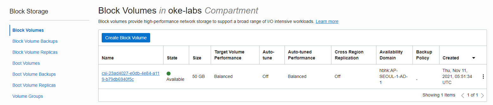

1.6.1 Block Volume 사용하기
컨테이너의 내부 스토리지는 기본적으로 컨테이너가 삭제, 종료되면 사라집니다. 데이터가 사라지는 것을 막고 보존이 필요한 데이터를 저장하기 위해 별도의 Persistent Volume을 사용합니다.
기본 설치된 Persistent Volume을 위한 StorageClass 확인
OKE는 OCI IaaS를 기반으로 제공되는 서비스로 OCI Block Volume 서비스를 이용하게 Persistent Volume을 제공합니다. 현 버전 기준으로 FlexVolume 볼륨 플러그인과 CSI(Container Storage Interface) 볼륨 플러그인의 두 가지를 사용하고 있습니다.
-
기본 StorageClass 확인
- oci: OCI Block Volume 서비스를 위한 FlexVolume 플러그인 사용
- oci-bv: OCI Block Volume 서비스를 위한 CSI 플러그인 사용
oke_admin@cloudshell:~ (ap-seoul-1)$ kubectl get storageclass NAME PROVISIONER RECLAIMPOLICY VOLUMEBINDINGMODE ALLOWVOLUMEEXPANSION AGE oci (default) oracle.com/oci Delete Immediate false 2d oci-bv blockvolume.csi.oraclecloud.com Delete WaitForFirstConsumer false 2d -
CSI 볼륨 플러그인
- FlexVolume 플러그인 방식은 오픈소스 Kubernetes 1.2 버전때 부터 사용되어 더 오래되었지만, 업스트림 Kubernetes에서 CSI 플러그인 방식을 사용하는 흐름입니다.
- OKE에서도 Release Note 2020년 8월 1일, Support for the Container Storage Interface (CSI) volume plug-in 에 나와 있는 것 처럼 OKE에서도 신규 기능은 CSI 플러그인에 추가할 예정이며, FlexVolume은 유지 보수만 할 계획입니다. 그래서 이하 설명에서는 CSI 플러그인을 사용하는 oci-bv storageclass를 사용하겠습니다.
- Flex 플러그인을 사용하는 oci storageclass에 대한 사항은 공식 문서를 참조바랍니다.
OCI Block Volume용 CSI 플러그인을 사용하여 Persistent Volume 만들어 사용하기
Persitent Volume 테스트
-
아래와 같이 PV 요청 yaml을 사용하여 요청합니다.
apiVersion: v1 kind: PersistentVolumeClaim metadata: name: csi-bvs-pvc spec: storageClassName: "oci-bv" accessModes: - ReadWriteOnce resources: requests: storage: 50Gi -
테스트 앱 배포
- 요청한 Persistent Volume을 컨테이너 상에 마운트한 테스트 앱
apiVersion: apps/v1 kind: Deployment metadata: labels: app: nginx-bvs-pvc name: nginx-bvs-pvc spec: replicas: 1 selector: matchLabels: app: nginx-bvs-pvc template: metadata: labels: app: nginx-bvs-pvc spec: containers: - name: nginx image: nginx:latest volumeMounts: - name: data mountPath: /usr/share/nginx/html volumes: - name: data persistentVolumeClaim: claimName: csi-bvs-pvc -
생성 결과
- 아래와 같이 정상적으로 PV 요청에 따라 PV가 생성되고, 테스트 앱로 구동된 것을 볼 수 있습니다.
oke_admin@cloudshell:persistent-volume (ap-seoul-1)$ kubectl apply -f csi-bvs-pvc.yaml persistentvolumeclaim/csi-bvs-pvc created oke_admin@cloudshell:persistent-volume (ap-seoul-1)$ kubectl apply -f nginx-deployment-bvs-pvc.yaml deployment.apps/nginx-bvs-pvc created oke_admin@cloudshell:persistent-volume (ap-seoul-1)$ kubectl get pv NAME CAPACITY ACCESS MODES RECLAIM POLICY STATUS CLAIM STORAGECLASS REASON AGE csi-14f32977-eaf6-4eaa-87bd-7c736ec43a52 50Gi RWO Delete Bound default/csi-bvs-pvc oci-bv 101s oke_admin@cloudshell:persistent-volume (ap-seoul-1)$ kubectl get pod NAME READY STATUS RESTARTS AGE nginx-bvs-pvc-7b574c9c5c-vdp7c 1/1 Running 0 118s-
Block Volume OCI 서비스 콘솔에서 Storage > Block Volumes 화면에서 보면 아래와 같이 PV용 Block Volume 만들어 졌으며, 특정 Worker Node에 부착된 걸 알 수 있습니다.

-
테스트
-
Persistent Volume에 쓰기
아래와 같이 컨테이너 내부로 들어가 마운트 된 PV 내에 파일쓰기를 합니다.
oke_admin@cloudshell:persistent-volume (ap-seoul-1)$ kubectl exec -it nginx-bvs-pvc-7b574c9c5c-vdp7c -- bash root@nginx-bvs-pvc-7b574c9c5c-vdp7c:/# echo "Hello PV" >> /usr/share/nginx/html/hello_world.txt root@nginx-bvs-pvc-7b574c9c5c-vdp7c:/# cat /usr/share/nginx/html/hello_world.txt Hello PV root@nginx-bvs-pvc-7b574c9c5c-vdp7c:/# -
POD 삭제 후 재생성
Persistent Volume이 유지되는 것을 확인하기 위해 기존 POD를 삭제하고 재생성되도록 합니다. 이때 RWO 모드라 다른 Node에 POD가 생성되는 경우, Multi-Attach error가 일시적으로 발생합니다. 기존 POD가 삭제되었다는 것을 인지하는 데 시간이 걸리며, 조금 지난 후에 POD가 다시 재생성됩니다.
oke_admin@cloudshell:persistent-volume (ap-seoul-1)$ kubectl get pod NAME READY STATUS RESTARTS AGE nginx-bvs-pvc-7b574c9c5c-vdp7c 1/1 Running 0 6m53s oke_admin@cloudshell:persistent-volume (ap-seoul-1)$ kubectl delete pod nginx-bvs-pvc-7b574c9c5c-vdp7c pod "nginx-bvs-pvc-7b574c9c5c-vdp7c" deleted oke_admin@cloudshell:persistent-volume (ap-seoul-1)$ kubectl get pod NAME READY STATUS RESTARTS AGE nginx-bvs-pvc-7b574c9c5c-vrptl 0/1 ContainerCreating 0 17s oke_admin@cloudshell:persistent-volume (ap-seoul-1)$ kubectl get pod NAME READY STATUS RESTARTS AGE nginx-bvs-pvc-7b574c9c5c-vrptl 1/1 Running 0 75s -
신규 POD에서 Persistent Volume 확인
앞서 변경한 파일을 신규 POD에서 다시 조회해 보면 기존 내용이 남아 있는 걸 확인할 수 있습니다.
oke_admin@cloudshell:persistent-volume (ap-seoul-1)$ kubectl exec -it nginx-bvs-pvc-7b574c9c5c-vrptl -- cat /usr/share/nginx/html/hello_world.txt Hello PV
-
-
참고사항
- 앞선 테스트에서 처럼 ReadWriteOnce 접근 모드에서는 단일 Kubernetes Node에 있는 POD만 붙여서 사용할 수 있습니다. 다른 Node에 있는 POD에서 동일한 PV를 사용하려고 하면, 컨테이너 기동시 Multi-Attach 오류가 발생하며, 컨테이너가 기동이 되지 않습니다.
- 또한 Self-Healing으로 POD 재기동시 기존 POD가 해당 volume을 사용하고 있다고 생각하여 Multi-Attach 오류가 발생하고, 사용중인 POD가 없음을 인지하는 데 약간의 시간이 걸리게 됩니다.
ReadWriteMany 지원 여부
현재 버전 기준 CSI Driver for OCI Block Volume Service는 ReadWriteOnce만 지원합니다. 그래서 단일 Kuberenetes Node에 멀티 Pod까지만 지원됩니다. 또한 위 작업 내용을 accessMode를 ReadWriteMany로 변경후 동일하게 수행하면 pod가 생성되지 않고 아래와 같이 에러가 나게 됩니다.
oke_admin@cloudshell:~ (ap-seoul-1)$ kubectl get events
LAST SEEN TYPE REASON OBJECT MESSAGE
...
80s Warning ProvisioningFailed persistentvolumeclaim/mynginxclaim failed to provision volume with StorageClass "oci-bv": rpc error: code = InvalidArgument desc = invalid volume capabilities requested. Only SINGLE_NODE_WRITER is supported ('accessModes.ReadWriteOnce' on Kubernetes)
** 이 글은 개인으로서, 개인의 시간을 할애하여 작성된 글입니다. 글의 내용에 오류가 있을 수 있으며, 글 속의 의견은 개인적인 의견입니다. **